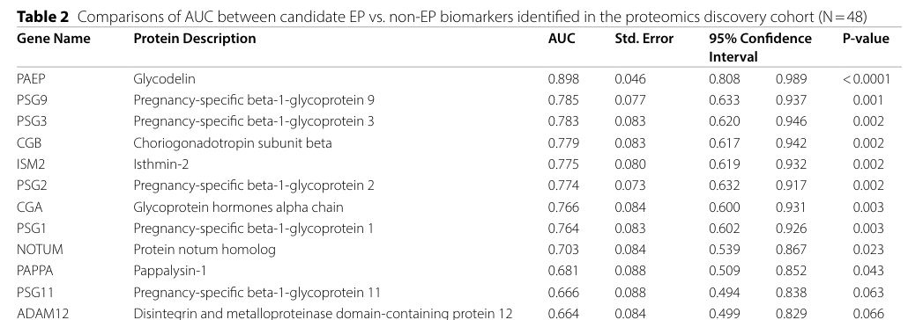

ISM2 encodes isthmin-2, a secreted glycoprotein (571 AA) belonging to the isthmin family. The protein contains two characteristic domains: a TSP type-1 repeat (thrombospondin type-1, residues 327-371) and an AMOP domain (adhesion-associated domain shared by MUC4 and other proteins, residues 396-559). ISM2 is synthesized as a precursor with a signal peptide (residues 1-26) that is cleaved to produce the mature secreted protein (residues 27-571). The protein undergoes N-linked glycosylation at three sites (Asn-117, Asn-300, Asn-392) and contains three conserved disulfide bonds in the TSP-1 domain. ISM2 shows high expression in placenta and moderate expression in multiple tissues including pancreas, kidney, heart, liver, lung, brain, and skeletal muscle. Expression data indicate that ISM2 expression in humans is almost specific to the placenta (Martinez et al. 2020, PMID:33088937), with detection in trophoblastic cells by immunohistochemistry and in maternal serum by ELISA; serum ISM2 is significantly decreased in preeclampsia and the protein is overexpressed in choriocarcinoma, leading the authors to propose an angiogenic function. The AMOP domains of ISM1 and ISM2 contain a KGD motif (an integrin αIIbβ3-binding sequence found in known antagonists of platelet aggregation), and ISM2 additionally has a WSRL motif reported to be associated with autophagy induction (Shakhawat et al. 2022, PMID:36611811); these motif-based hypotheses remain to be experimentally validated for ISM2 itself. ISM2 has also been identified as a plasma biomarker decreased in ectopic pregnancy (Beer et al. 2023, PMID:37715129) and is downregulated in the villous core stroma of SARS-CoV-2-infected placentas (Stylianou et al. 2024, PMID:38322491). The TSP-1 domain is known in other proteins to mediate protein-protein and protein-carbohydrate interactions, while the AMOP domain is found in adhesion proteins and mucins. ISM2 interacts with SCN3B (sodium channel beta-3 subunit). While the precise molecular function of ISM2 remains to be fully elucidated, its domain structure and secreted nature suggest roles in cell adhesion, extracellular matrix interactions, or signaling.
| GO Term | Evidence | Action | Reason |
|---|---|---|---|
|
GO:0005576
extracellular region
|
IEA
GO_REF:0000044 |
ACCEPT |
Summary: ISM2 is a secreted protein, as indicated by the presence of a signal peptide (residues 1-26) that targets the protein for secretion. The mature protein (residues 27-571) functions in the extracellular region. [file:human/ISM2/ISM2-uniprot.txt, "SUBCELLULAR LOCATION: Secreted"; "SIGNAL 1..26"; "CHAIN 27..571"]
Supporting Evidence:
UniProt:Q6H9L7
SUBCELLULAR LOCATION: Secreted {ECO:0000305}.
file:human/ISM2/ISM2-deep-research-perplexity.md
Isthmin-2 (ISM2), encoded by the ISM2 gene located on human chromosome 14q24.3, is a secreted protein of approximately 63.9 kilodaltons comprising 571 amino acid residues
PMID:36611811
Isthmin (ISM) is a secreted protein that was first detected through an unbiased screening for secreted proteins in Xenopus embryos and initially named Xenopus Isthmin (xIsm). The ISM protein family has two members, namely ISM1 (~60 kDa) and ISM2 (~63.9 kDa). Both of these proteins contain a hydrophobic signal peptide at the N-terminus along with a centrally positioned thrombospondin type 1 repeat (TSR1) domain.
PMID:33088937
In the human genome, there are two isthmin genes [isthmin 1 (ISM1) and isthmin 2 (ISM2)], both of which encode secreted proteins that exhibit signal peptides, as well as thrombospondin-1 (TSR1) and Adhesion-associated domain in MUC4 and Other Proteins (AMOP) domains.
|
|
GO:0005515
protein binding
|
IPI
PMID:32296183 A reference map of the human binary protein interactome. |
KEEP AS NON CORE |
Summary: ISM2 physically interacts with SCN3B (sodium channel beta-3 subunit) as documented in UniProt and supported by a large-scale human binary protein interactome study. The TSP-1 domain in ISM2 is known to mediate protein-protein interactions. However, "protein binding" is a very general term that doesn't provide informative functional annotation about what ISM2 actually does. More specific molecular function terms would be preferable once the binding function is better characterized.
Reason: UniProt curates multiple experimental interaction reports with SCN3B; however, the term is too generic to represent a core molecular function and is retained only as non-core.
Supporting Evidence:
UniProt:Q6H9L7
-!- INTERACTION: Q6H9L7; Q9NY72: SCN3B; NbExp=3; IntAct=EBI-17249161, EBI-17247926; -!- SUBCELLULAR LOCATION: Secreted {ECO:0000305}
PMID:32296183
A reference map of the human binary protein interactome.
|
The research report should be a detailed narrative explaining the function, biological processes, and localization of the gene product. Citations should be given for all claims.
You should prioritize authoritative reviews and primary scientific literature when conducting research. You can supplement
this with annotations you find in gene/protein databases, but these can be outdated or inaccurate.
We are specifically interested in the primary function of the gene - for enzymes, what reaction is catalyzed, and what is the substrate specificity? For transporters, what is the substrate? For structural proteins or adapters, what is the broader structural role? For signaling molecules, what is the role in the pathway.
We are interested in where in or outside the cell the gene product carries out its function.
We are also interested in the signaling or biochemical pathways in which the gene functions. We are less interested in broad pleiotropic effects, except where these elucidate the precise role.
Include evidence where possible. We are interested in both experimental evidence as well as inference from structure, evolution, or bioinformatic analysis. Precise studies should be prioritized over high-throughput, where available.
The literature retrieved consistently uses ISM2 to denote human isthmin-2, a secreted extracellular protein encoded on chromosome 14q24.3 with the characteristic TSR1 (thrombospondin type-1 repeat) + AMOP domain architecture of the isthmin family, matching the UniProt target Q6H9L7 (aliases in retrieved sources include “Isthmin 2” and “Thrombospondin and AMOP domain-containing isthmin-like protein”). (shakhawat2022isthmin—amultifacetedprotein pages 1-3, martinez2020isthmin2is pages 1-2)
Isthmin proteins (ISM1 and ISM2) are described as secreted proteins defined by an N-terminal signal peptide and a conserved arrangement of a central TSR1 domain followed by a C-terminal AMOP domain. For human ISM2, the review literature describes it as a ~63.9 kDa secreted protein with this TSR1–AMOP architecture. (shakhawat2022isthmin—amultifacetedprotein pages 1-3)
TSR1 domain (thrombospondin type-1 repeat): TSR1 motifs are common in extracellular or membrane-associated proteins and are broadly associated with cell–cell and cell–matrix interactions, migration, proliferation, and apoptosis in other TSR-containing proteins; for ISM2 this provides domain-based inference that the protein can act in extracellular matrix (ECM) or receptor–ligand contexts. (shakhawat2022isthmin—amultifacetedprotein pages 1-3)
AMOP domain: The AMOP domain is an extracellular module present in multiple cell-adhesion-associated proteins. For ISM2, AMOP is highlighted as part of an extracellular protein architecture that plausibly supports adhesion and receptor binding. (shakhawat2022isthmin—amultifacetedprotein pages 3-6)
A recent review compiles motif-level observations for ISM2:
- TSR1 motifs: ISM2 TSR1 contains motifs (e.g., WSPW and EPQ) where EPQ is noted (in TSR biology broadly) to influence carbohydrate-binding specificity, raising a hypothesis of lectin-like interactions. (shakhawat2022isthmin—amultifacetedprotein pages 3-6)
- AMOP motifs: The AMOP domain in ISM2 is reported to contain a KGD motif that has been reported to bind integrin αIIbβ3, and a WSRL motif described as being involved in autophagy induction. Importantly, these statements are compiled in review context and should be treated as hypothesis-generating unless supported by direct biochemical/cellular validation in ISM2-focused experiments. (shakhawat2022isthmin—amultifacetedprotein pages 3-6)
Across sources, ISM2 is described as a secreted/extracellular protein (signal peptide + extracellular domains). (shakhawat2022isthmin—amultifacetedprotein pages 1-3)
Multiple pregnancy-related studies treat ISM2 as a placental marker and/or report it as highly expressed in placenta-associated contexts:
- Martinez et al. frame ISM2 as almost placenta-specific and quantify it in maternal serum by ELISA while also examining placental expression by immunohistochemistry. (martinez2020isthmin2is pages 1-2)
- Stylianou et al. report compartment-level placental expression changes (villous core stroma) in a spatial transcriptomic context. (stylianou2024wholetranscriptomeprofiling pages 8-9)
- Yu et al. detect ISM2 among circulating microparticle (CMP) proteins in maternal plasma, consistent with secretion and extracellular circulation. (yu2023circulatingmicroparticleproteins pages 2-4)
Mechanistic evidence for ISM2 remains comparatively limited in the retrieved corpus, but several experimentally anchored observations exist.
Masi et al. (International Journal of Molecular Sciences; published April 2023, https://doi.org/10.3390/ijms24076639) report that in sAPPα-treated SH-SY5Y neuroblastoma cells, ISM2 mRNA is listed as up-regulated as part of a transcriptional program associated with a MAPK-related pathway; the authors state the candidate genes were subsequently validated by qPCR. While the excerpt does not provide ISM2 fold-change or p-values, this places ISM2 among genes responsive to sAPPα-driven signaling in a neuronal context and links it to broader APP/sAPPα neuroprotective signaling frameworks discussed by the authors (including PI3K/Akt/NF-κB and PKC-associated regulation of α-secretase processing). (masi2023thelabyrinthinelandscape pages 15-17)
Stylianou et al. (Clinical & Translational Immunology; published January 2024, https://doi.org/10.1002/cti2.1488) report decreased ISM2 in the villous core stromal compartment of SARS‑CoV‑2-infected placentas (n=7) compared with pre-pandemic controls (n=9). They also note ISM2 as “a placental marker that is downregulated with preeclampsia,” and interpret the overall transcriptional architecture as consistent with hypoxia and vascular dysfunction signatures. The excerpt provides directionality (down) but not fold-change/p-value for ISM2. (stylianou2024wholetranscriptomeprofiling pages 8-9)
A synthesis review proposes that ISM2 may participate in integrin-mediated interactions (via KGD) and autophagy-related biology (via WSRL) based on motif presence and compiled prior findings. In the retrieved excerpt, these are not accompanied by binding constants, receptor validation in a defined ISM2 ligand–receptor system, or pathway-causal experiments, so these should be treated as putative functions requiring direct confirmation. (shakhawat2022isthmin—amultifacetedprotein pages 3-6)
The most concrete 2023–2024 advances for ISM2 in the retrieved literature are in proteomics-driven and transcriptomics-driven clinical/placental studies, positioning ISM2 as a candidate circulating biomarker in pregnancy-related conditions.
Beer et al. (Clinical Proteomics; published September 2023, https://doi.org/10.1186/s12014-023-09425-w) performed discovery LC–MS/MS and verification by targeted parallel reaction monitoring (PRM-MS) with stable isotope-labeled peptides.
Key ISM2-specific findings:
- ISM2 was among 14 candidate biomarkers verified as significantly different between EP and non-EP in an independent cohort at FDR ≤ 5%. (beer2023identificationandverification pages 1-2)
- In the verification cohort, ISM2 abundance was reported as lower in EP than in intrauterine pregnancy (IUP) or early pregnancy loss (EPL). (beer2023identificationandverification pages 5-6)
- Table images extracted from the paper indicate ISM2 discriminatory performance with AUC 0.775 (discovery) and AUC 0.941 (verification) for EP classification. (beer2023identificationandverification media 8d6157c0, beer2023identificationandverification media 006604df)
Study size and design:
- Discovery cohort: n=48 (16 IUP, 16 EPL, 16 EP)
- Verification cohort: n=74 (25 IUP, 24 EPL, 25 EP)
Methods included Wilcoxon testing with Benjamini–Hochberg FDR correction and multi-marker logistic/Lasso modeling. (beer2023identificationandverification pages 1-2, beer2023identificationandverification pages 5-6)
Interpretation: These data support ISM2 as a robust candidate biomarker (especially in a multivariate framework), but the study frames EP prediction as best served by multi-marker models; ISM2 is one component among multiple correlated pregnancy/placental proteins. (beer2023identificationandverification pages 1-2, beer2023identificationandverification pages 5-6)
Yu et al. (Scientific Reports; published January 2023, https://doi.org/10.1038/s41598-022-24869-0) analyzed CMP proteins from maternal plasma in a nested case–control study (PAS n=35; controls n=70) at two gestational windows (median 26 ± 2 weeks and 35 ± 2 weeks).
Key results:
- ISM2 was the only protein common to the top CMP panels distinguishing PAS from controls in both the second and third trimester panels (panel membership reported in the excerpt). (yu2023circulatingmicroparticleproteins pages 2-4)
- Reported classifier performance for the top panels: mean AUC 0.83 (second trimester) and mean AUC 0.78 (third trimester). (yu2023circulatingmicroparticleproteins pages 2-4)
- Observed vs permuted AUC comparisons (supporting non-random performance): 0.72 vs 0.45 (p < 2.20e−16) in second trimester; 0.60 vs 0.52 (p = 2.79e−5) in third trimester. (yu2023circulatingmicroparticleproteins pages 2-4)
Interpretation: ISM2 appears repeatedly in CMP-derived classifier panels, consistent with a role as a circulating placental protein marker. However, the reported AUCs are panel-level; ISM2-specific effect size/fold-change was not provided in the excerpt. (yu2023circulatingmicroparticleproteins pages 2-4)
Although pre-2023, Martinez et al. (Heliyon; published October 2020, https://doi.org/10.1016/j.heliyon.2020.e05096) provides one of the clearest direct clinical measurements of ISM2:
- Prospective cross-sectional cohort n=81 (30 preeclampsia; 21 gestational hypertension; 30 normotensive controls).
- Serum ISM2 decreased in preeclampsia vs controls (P = 0.036) and reduction was supported by placental immunohistochemistry. (martinez2020isthmin2is pages 1-2)
- ISM2 was reported as overexpressed in choriocarcinoma samples. (martinez2020isthmin2is pages 1-2)
Stylianou et al. (2024) explicitly references ISM2 as a placental marker downregulated with preeclampsia, consistent with Martinez et al. (2020), and additionally observes decreased ISM2 in SARS‑CoV‑2 placentas within a hypoxia/vascular dysfunction signature. (stylianou2024wholetranscriptomeprofiling pages 8-9)
The most mature application space in the retrieved literature is diagnostic/prognostic biomarker discovery in pregnancy complications:
- Ectopic pregnancy: ISM2 shows high AUC in an independent verification cohort (AUC 0.941) and was measured using targeted PRM-MS suitable for multiplex biomarker panel development. (beer2023identificationandverification pages 1-2, beer2023identificationandverification pages 5-6, beer2023identificationandverification media 8d6157c0)
- Placenta accreta spectrum: ISM2 participates in CMP protein panels with mean AUCs 0.83 (2nd trimester) and 0.78 (3rd trimester), indicating potential utility for prenatal risk stratification pending external validation and clinical assay development. (yu2023circulatingmicroparticleproteins pages 2-4)
Open Targets aggregates modest disease associations for ISM2 including preeclampsia and colorectal cancer/neoplasm categories, based on limited evidence items and literature mappings. These aggregated scores are useful for hypothesis generation but should not be interpreted as causal. (OpenTargets Search: -ISM2)
A recent expert review (Shakhawat et al., Cells; published December 2022, https://doi.org/10.3390/cells12010017) emphasizes that, despite two decades since discovery, mechanistic understanding of ISM-family receptors/ligands and downstream signaling remains incomplete, and prioritizes identifying binding partners and receptors as a key research gap. This assessment is consistent with the retrieved experimental record for ISM2, which is currently weighted toward expression/biomarker evidence rather than well-resolved receptor–ligand biochemistry. (shakhawat2022isthmin—amultifacetedprotein pages 1-3)
The following table consolidates the strongest retrieved evidence items for functional annotation and application context.
| Evidence type | Finding | System/assay & sample size | Quantitative stats (AUC/p-value/etc.) | Source (include URL, year) | Context citation ID |
|---|---|---|---|---|---|
| Structure/domain | Human ISM2 (UniProt Q6H9L7) is a secreted ~63.9 kDa isthmin-family protein with an N-terminal signal peptide, a central thrombospondin type-1 repeat (TSR1), and a C-terminal AMOP domain. | Family/domain review synthesizing sequence/domain annotations for human ISM2. | ~63.9 kDa protein; no direct functional effect size reported. | Shakhawat HM et al., Cells (2022), https://doi.org/10.3390/cells12010017 | (shakhawat2022isthmin—amultifacetedprotein pages 1-3) |
| Localization | ISM2 is inferred to be extracellular/secreted; pregnancy-focused studies additionally describe it as highly placenta-associated and detectable in circulating microparticles/plasma. | Review/domain annotation; placental serum ELISA study; CMP plasma proteomics in pregnancy. | ELISA sensitivity ~5.0 pg/mL; assay CVs <15% in one study. | Shakhawat HM et al., Cells (2022), https://doi.org/10.3390/cells12010017; Martinez C et al., Heliyon (2020), https://doi.org/10.1016/j.heliyon.2020.e05096 | (shakhawat2022isthmin—amultifacetedprotein pages 1-3, martinez2020isthmin2is pages 1-2) |
| Molecular interaction/motif | ISM2 TSR1 contains WSPW and EPQ motifs; the AMOP domain contains a KGD motif reported to bind integrin αIIbβ3 and a WSRL motif proposed to participate in autophagy induction. Evidence is largely motif/domain-based rather than direct ISM2 biochemical validation. | Domain/motif analysis in review literature. | No ISM2-specific binding constant or cellular effect size reported. | Shakhawat HM et al., Cells (2022), https://doi.org/10.3390/cells12010017 | (shakhawat2022isthmin—amultifacetedprotein pages 3-6) |
| Pathway/regulation | In sAPPα-treated SH-SY5Y neuroblastoma cells, ISM2 mRNA was reported as up-regulated in a MAPK-related transcriptional response linked by the authors to broader APP/sAPPα neuroprotective signaling. | SH-SY5Y cells; sAPPα treatment; differential display with qPCR validation context. | Direction: up-regulated; no ISM2-specific fold-change or p-value in retrieved excerpt. | Masi M et al., Int J Mol Sci (2023), https://doi.org/10.3390/ijms24076639 | (masi2023thelabyrinthinelandscape pages 15-17) |
| Pathway/regulation | In SARS-CoV-2-infected placentas, villous core stromal ISM2 expression was decreased within a broader placental dysfunction program involving hypoxia/vascular dysregulation signatures. | Spatial/whole-transcriptome placental profiling; SARS-CoV-2 placentas n=7 vs prepandemic controls n=9. | Direction: decreased; no ISM2-specific fold-change or p-value in retrieved excerpt. | Stylianou N et al., Clinical & Translational Immunology (2024), https://doi.org/10.1002/cti2.1488 | (stylianou2024wholetranscriptomeprofiling pages 8-9) |
| Disease/biomarker application | ISM2 was decreased in preeclampsia compared with normotensive pregnancy controls; placental immunohistochemistry supported reduced expression. | Prospective cross-sectional human study; serum sandwich ELISA and placental IHC; total n=81 (30 preeclampsia, 21 gestational hypertension, 30 controls). | Preeclampsia vs controls: P = 0.036. | Martinez C et al., Heliyon (2020), https://doi.org/10.1016/j.heliyon.2020.e05096 | (martinez2020isthmin2is pages 1-2) |
| Disease/biomarker application | ISM2 was reported as overexpressed in choriocarcinoma, contrasting with its decrease in preeclampsia and suggesting value as a placental trophoblast-associated disease marker. | Human placental/choriocarcinoma tissue analysis with immunohistochemistry context. | Qualitative overexpression reported; no fold-change retrieved. | Martinez C et al., Heliyon (2020), https://doi.org/10.1016/j.heliyon.2020.e05096 | (shakhawat2022isthmin—amultifacetedprotein pages 9-10, martinez2020isthmin2is pages 1-2) |
| Disease/biomarker application | ISM2 was one of 14 verified plasma biomarkers for ectopic pregnancy and showed lower abundance in ectopic pregnancy than intrauterine pregnancy/early pregnancy loss in the verification cohort. | Discovery LC-MS/MS and verification PRM-MS in plasma; discovery n=48 (16 IUP, 16 EPL, 16 EP), verification n=74 (25 IUP, 24 EPL, 25 EP). | Significant at FDR ≤ 5%; candidate biomarker AUCs in the verified set included ISM2 at 0.941. | Beer LA et al., Clinical Proteomics (2023), https://doi.org/10.1186/s12014-023-09425-w | (beer2023identificationandverification pages 1-2, beer2023identificationandverification pages 5-6, beer2023identificationandverification media 8d6157c0) |
| Disease/biomarker application | ISM2 appeared in top-performing circulating microparticle (CMP) protein panels for placenta accreta spectrum (PAS) in both second and third trimesters, indicating reproducible inclusion in multi-protein classifiers. | Maternal plasma CMP proteomics; PAS cases n=35, controls n=70; samples at median 26 ± 2 weeks and 35 ± 2 weeks. | Top second-trimester panel mean AUC 0.83; top third-trimester panel mean AUC 0.78; observed vs permuted AUCs 0.72 vs 0.45 (p < 2.20e−16) and 0.60 vs 0.52 (p = 2.79e−5), respectively. | Yu HY et al., Scientific Reports (2023), https://doi.org/10.1038/s41598-022-24869-0 | (yu2023circulatingmicroparticleproteins pages 2-4) |
| Disease association overview | Curated disease-target resources list recurrent associations of human ISM2 with preeclampsia, colorectal cancer/carcinoma, neoplasm, and malunion fracture, but current evidence scores are modest and driven by limited literature. | Open Targets disease-target aggregation. | Evidence size 4 for listed diseases; scores include colorectal cancer 0.0872, neoplasm 0.0948, preeclampsia 0.0507. | Open Targets Platform query for ISM2 (accessed via tool context; current aggregation) | (OpenTargets Search: -ISM2) |
Table: This table compiles key functional-annotation evidence for human ISM2/Isthmin-2 from the retrieved literature and database sources. It highlights where evidence is experimental versus inferred, and captures the main quantitative biomarker results currently available.
Most supported statements (direct evidence):
1. Secreted/extracellular protein: ISM2 has a secreted-protein architecture (signal peptide, TSR1 and AMOP domains) and is detected in circulation/plasma-derived compartments in pregnancy studies. (shakhawat2022isthmin—amultifacetedprotein pages 1-3, yu2023circulatingmicroparticleproteins pages 2-4)
2. Placental association: ISM2 is repeatedly treated as a placental marker and is measurable in maternal serum; it is downregulated in preeclampsia serum and in SARS‑CoV‑2 placental villous core stroma. (martinez2020isthmin2is pages 1-2, stylianou2024wholetranscriptomeprofiling pages 8-9)
3. Clinical biomarker potential: ISM2 contributes diagnostically to pregnancy complication classification, with strong AUC performance for EP in a targeted PRM-MS verification cohort and repeated inclusion in PAS CMP panels. (beer2023identificationandverification pages 5-6, yu2023circulatingmicroparticleproteins pages 2-4, beer2023identificationandverification media 8d6157c0)
Likely but not yet fully resolved mechanistic statements (inference/hypothesis):
- ISM2 likely participates in extracellular adhesion/receptor interactions typical of TSR1/AMOP proteins; motif-based hypotheses suggest potential integrin interaction (KGD) and autophagy-related effects (WSRL), but direct ISM2-specific biochemical pathway validation is not established in the retrieved excerpts. (shakhawat2022isthmin—amultifacetedprotein pages 3-6)
Based on the current evidence distribution (strong biomarker/expression signal; limited receptor/pathway resolution), the most impactful next steps for functional annotation would be:
- Receptor identification and binding validation (e.g., integrin-binding assays, surface plasmon resonance, cell adhesion assays with blocking antibodies), explicitly testing whether ISM2 binds αIIbβ3 or other integrins in physiologically relevant cell types. (shakhawat2022isthmin—amultifacetedprotein pages 3-6, shakhawat2022isthmin—amultifacetedprotein pages 1-3)
- Mechanism-focused perturbation experiments (CRISPR KO/knockdown, recombinant ISM2 addition) in placental trophoblast/stromal models to test effects on angiogenic signaling, ECM remodeling, and autophagy markers, guided by pregnancy-pathology associations. (martinez2020isthmin2is pages 1-2, stylianou2024wholetranscriptomeprofiling pages 8-9)
- Clinical assay translation: orthogonal validation of ISM2 (e.g., ELISA or targeted MS) and prospective cohort testing for EP/PAS, since current high AUCs are promising but require multi-center confirmation and calibration in real-world workflows. (beer2023identificationandverification pages 5-6, yu2023circulatingmicroparticleproteins pages 2-4, beer2023identificationandverification media 8d6157c0)
Many mechanistic claims around ISM2 are currently domain- and motif-informed rather than supported by direct receptor biochemistry or pathway-causal experiments in the retrieved set. The strongest recent evidence (2023–2024) is clinical proteomics/transcriptomics, which robustly supports biomarker relevance but does not, by itself, establish molecular mechanism. (shakhawat2022isthmin—amultifacetedprotein pages 3-6, yu2023circulatingmicroparticleproteins pages 2-4, stylianou2024wholetranscriptomeprofiling pages 8-9)
References
(shakhawat2022isthmin—amultifacetedprotein pages 1-3): Hosen Md Shakhawat, Zaman Hazrat, and Zhongjun Zhou. Isthmin—a multifaceted protein family. Cells, 12:17, Dec 2022. URL: https://doi.org/10.3390/cells12010017, doi:10.3390/cells12010017. This article has 15 citations.
(martinez2020isthmin2is pages 1-2): Cynthia Martinez, Javier González-Ramírez, María E. Marín, Gustavo Martínez-Coronilla, Vanessa I. Meza-Reyna, Rafael Mora, and Raul Díaz-Molina. Isthmin 2 is decreased in preeclampsia and highly expressed in choriocarcinoma. Heliyon, 6:e05096, Oct 2020. URL: https://doi.org/10.1016/j.heliyon.2020.e05096, doi:10.1016/j.heliyon.2020.e05096. This article has 18 citations.
(shakhawat2022isthmin—amultifacetedprotein pages 3-6): Hosen Md Shakhawat, Zaman Hazrat, and Zhongjun Zhou. Isthmin—a multifaceted protein family. Cells, 12:17, Dec 2022. URL: https://doi.org/10.3390/cells12010017, doi:10.3390/cells12010017. This article has 15 citations.
(stylianou2024wholetranscriptomeprofiling pages 8-9): Nataly Stylianou, Ismail Sebina, Nicholas Matigian, James Monkman, Hadeel Doehler, Joan Röhl, Mark Allenby, Andy Nam, Liuliu Pan, Anja Rockstroh, Habib Sadeghirad, Kimberly Chung, Thais Sobanski, Ken O'Byrne, Ana Clara Simoes Florido Almeida, Patricia Zadorosnei Rebutini, Cleber Machado‐Souza, Emanuele Therezinha Schueda Stonoga, Majid E Warkiani, Carlos Salomon, Kirsty Short, Lana McClements, Lucia de Noronha, Ruby Huang, Gabrielle T Belz, Fernando Souza‐Fonseca‐Guimaraes, Vicki Clifton, and Arutha Kulasinghe. Whole transcriptome profiling of placental pathobiology in sars‐cov‐2 pregnancies identifies placental dysfunction signatures. Clinical & Translational Immunology, Jan 2024. URL: https://doi.org/10.1002/cti2.1488, doi:10.1002/cti2.1488. This article has 13 citations and is from a peer-reviewed journal.
(yu2023circulatingmicroparticleproteins pages 2-4): Hope Y. Yu, Serena B. Gumusoglu, David E. Cantonwine, Daniela A. Carusi, Prem Gurnani, Brandon Schickling, Robert C. Doss, Mark K. Santillan, Kevin P. Rosenblatt, and Thomas F. McElrath. Circulating microparticle proteins predict pregnancies complicated by placenta accreta spectrum. Scientific Reports, Jan 2023. URL: https://doi.org/10.1038/s41598-022-24869-0, doi:10.1038/s41598-022-24869-0. This article has 11 citations and is from a peer-reviewed journal.
(masi2023thelabyrinthinelandscape pages 15-17): Mirco Masi, Fabrizio Biundo, André Fiou, Marco Racchi, Alessia Pascale, and Erica Buoso. The labyrinthine landscape of app processing: state of the art and possible novel soluble app-related molecular players in traumatic brain injury and neurodegeneration. International Journal of Molecular Sciences, 24:6639, Apr 2023. URL: https://doi.org/10.3390/ijms24076639, doi:10.3390/ijms24076639. This article has 21 citations.
(beer2023identificationandverification pages 1-2): Lynn A. Beer, Xiangfan Yin, Jianyi Ding, Suneeta Senapati, Mary D. Sammel, Kurt T. Barnhart, Qin Liu, David W. Speicher, and Aaron R. Goldman. Identification and verification of plasma protein biomarkers that accurately identify an ectopic pregnancy. Clinical Proteomics, Sep 2023. URL: https://doi.org/10.1186/s12014-023-09425-w, doi:10.1186/s12014-023-09425-w. This article has 7 citations and is from a peer-reviewed journal.
(beer2023identificationandverification pages 5-6): Lynn A. Beer, Xiangfan Yin, Jianyi Ding, Suneeta Senapati, Mary D. Sammel, Kurt T. Barnhart, Qin Liu, David W. Speicher, and Aaron R. Goldman. Identification and verification of plasma protein biomarkers that accurately identify an ectopic pregnancy. Clinical Proteomics, Sep 2023. URL: https://doi.org/10.1186/s12014-023-09425-w, doi:10.1186/s12014-023-09425-w. This article has 7 citations and is from a peer-reviewed journal.
(beer2023identificationandverification media 8d6157c0): Lynn A. Beer, Xiangfan Yin, Jianyi Ding, Suneeta Senapati, Mary D. Sammel, Kurt T. Barnhart, Qin Liu, David W. Speicher, and Aaron R. Goldman. Identification and verification of plasma protein biomarkers that accurately identify an ectopic pregnancy. Clinical Proteomics, Sep 2023. URL: https://doi.org/10.1186/s12014-023-09425-w, doi:10.1186/s12014-023-09425-w. This article has 7 citations and is from a peer-reviewed journal.
(beer2023identificationandverification media 006604df): Lynn A. Beer, Xiangfan Yin, Jianyi Ding, Suneeta Senapati, Mary D. Sammel, Kurt T. Barnhart, Qin Liu, David W. Speicher, and Aaron R. Goldman. Identification and verification of plasma protein biomarkers that accurately identify an ectopic pregnancy. Clinical Proteomics, Sep 2023. URL: https://doi.org/10.1186/s12014-023-09425-w, doi:10.1186/s12014-023-09425-w. This article has 7 citations and is from a peer-reviewed journal.
(OpenTargets Search: -ISM2): Open Targets Query (-ISM2, 5 results). Buniello, A. et al. (2025). Open Targets Platform: facilitating therapeutic hypotheses building in drug discovery. Nucleic Acids Research.
(shakhawat2022isthmin—amultifacetedprotein pages 9-10): Hosen Md Shakhawat, Zaman Hazrat, and Zhongjun Zhou. Isthmin—a multifaceted protein family. Cells, 12:17, Dec 2022. URL: https://doi.org/10.3390/cells12010017, doi:10.3390/cells12010017. This article has 15 citations.

Isthmin-2 (ISM2), encoded by the ISM2 gene located on human chromosome 14q24.3, is a secreted protein of approximately 63.9 kilodaltons comprising 571 amino acid residues[3][14]. This protein belongs to the isthmin family alongside ISM1 and represents a critical regulator of vascular biology, angiogenesis, and developmental processes[14][20][49]. ISM2 is structurally defined by the presence of two major conserved domains: a thrombospondin type-1 repeat (TSR1) domain positioned centrally and an adhesion-associated domain in MUC4 and other proteins (AMOP) domain at the carboxyl terminus, flanked by an amino-terminal signal peptide[14][20][35][49]. The protein exhibits complex biological functions that vary depending on its physical state and tissue context, with particularly significant roles in placental vascularization, where it functions as an angiogenic modulator whose altered expression contributes to pathological conditions such as preeclampsia and contributes to tumor angiogenesis in choriocarcinoma[13][57]. Recent structural and functional studies have substantially revised earlier understanding of how ISM2 and its family member ISM1 interact with cellular receptors and execute their biological functions, revealing sophisticated mechanisms of regulation through post-translational modifications and context-dependent signaling.
The ISM2 gene, also designated TAIL1 (thrombospondin and AMOP containing isthmin-like 1) or THSD3 (thrombospondin type-1 domain-containing protein 3) in earlier nomenclature[12][58], comprises a complete open reading frame encoding a 571-amino acid precursor protein with an initial molecular weight of approximately 63.9 kilodaltons[3][13][49]. The gene is located on chromosome 14, specifically at chromosomal position 14q24.3 in humans[52], and represents one of only two known members of the isthmin gene family, alongside ISM1 which is encoded on chromosome 20[52]. Phylogenetic analysis demonstrates that both ISM1 and ISM2 are highly conserved across vertebrate species, suggesting ancient evolutionary origins and fundamental biological importance[39]. The genomic organization of ISM2 results in two alternatively spliced transcript variants that encode distinct protein isoforms, although the specific functional differences between these variants remain incompletely characterized[58].
The primary structure of ISM2 follows a characteristic architecture beginning with an amino-terminal hydrophobic signal peptide that directs the protein into the secretory pathway[14][20][35][39][49]. This signal sequence typically comprises approximately 30 amino acid residues and facilitates translocation of the nascent polypeptide into the endoplasmic reticulum lumen during ribosomal synthesis. Following synthesis and signal peptidase cleavage, the mature secreted protein consists of an amino-terminal region of approximately 216 residues that is predicted to be largely intrinsically disordered, followed by the highly structured thrombospondin type-1 repeat domain[9]. The TSR1 domain occupies a central position in the protein sequence and comprises approximately 60 amino acid residues organized into a conserved three-stranded antiparallel beta-sheet core stabilized by three disulfide bonds and featuring conserved tryptophan and arginine residues that form a characteristic tryptophan-arginine (Trp-Arg) ladder[9][14][20].
The TSR1 domain of ISM2 exhibits the characteristic structural features observed in thrombospondin-related proteins and shares significant homology with the TSR1 domain of ISM1, demonstrating approximately 98% sequence identity between mouse and human orthologs[32][52]. Within the TSR1 domain, several critical structural motifs have been identified that appear essential for protein function. Most notably, ISM2 contains a WSPW motif similar to but distinct from the WSLW motif present in ISM1[14][20][35]. This motif is positioned to potentially facilitate interactions with heparin and other glycosaminoglycans, a function previously characterized for thrombospondin-1 TSR domains[20][35]. The TSR1 domain also contains an EPQ motif known to determine carbohydrate binding specificity and a CSVTCG motif that is conserved among anti-angiogenic TSR-containing proteins and may facilitate interactions with CD36, a receptor implicated in mediating anti-angiogenic signaling[14][20].
The TSR1 domain undergoes critical post-translational modification through C-mannosylation at two conserved tryptophan residues corresponding to positions 223 and 226 in the human ISM1 sequence, with equivalent positions predicted to be modified in ISM2[9][33][36]. This C-mannosylation occurs through a unique glycosylation mechanism distinct from the canonical N-linked or O-linked glycosylation pathways, whereby mannose residues are attached directly to the indole nitrogen of tryptophan side chains[33][36]. Structural studies have demonstrated that C-mannosylation plays a critical role in protein folding, stability, and secretion, with the C-mannoses positioned to interact through hydrogen bonding within the tryptophan-arginine ladder structure[9][33][36]. In the absence of C-mannosylation, thrombospondin type-1 repeats demonstrate significantly reduced thermal and reductive stability, form aberrant intermolecular disulfide bridges at physiological temperatures, and exhibit delayed folding kinetics within the endoplasmic reticulum[33][36]. The C-mannosylation process is itself dependent on prior N-glycosylation events, creating an interdependent post-translational modification hierarchy that ensures proper protein folding and export[32][33].
The carboxyl-terminal AMOP domain of ISM2 comprises approximately 100 amino acid residues and represents a relatively recently characterized protein motif found in only a limited number of secreted and transmembrane proteins including MUC4 (mucin-4), SUSD2 (sushi domain-containing protein 2), ISM1, and ISM2[14][20][35][39][49]. Recent crystal structure determination of the ISM1 AMOP domain has revealed that this domain adopts a highly distinctive fold centered on a streptavidin-like antiparallel beta-barrel core structure, a surprising finding given the domain's function in cell adhesion rather than biotin binding[9][16]. The AMOP domain comprises multiple conserved structural features including eight invariant cysteine residues that form complex disulfide bonding patterns, a series of antiparallel beta-strands forming the central barrel or "fingers" structure, and lateral alpha helices forming a "thumb" region[9][16]. Comparison of AlphaFold-predicted structures of AMOP domains from different proteins reveals that while the conserved core streptavidin-like beta-barrel is maintained across all AMOP-containing proteins, the surface helices and loops vary substantially among different AMOP proteins, potentially accounting for functional diversity among these proteins[9][16].
A particularly notable feature of ISM1 and ISM2 AMOP domains is the presence of an unpaired cysteine residue (Cys303 in ISM1) located on a surface loop[9][16]. This surface-exposed cysteine may participate in additional post-translational modifications or may serve regulatory functions through intermolecular disulfide bonding or redox-dependent interactions. Within the AMOP domain, previous studies identified a putative RKD (arginine-lysine-aspartate) motif at amino acid positions 315-317 that was proposed to function analogously to the canonical RGD (arginine-glycine-aspartate) integrin-binding sequence[48][49]. However, recent structural analysis has demonstrated that this RKD sequence is rigidly positioned on the beta-barrel core and does not occupy a flexible loop region typical of integrin-binding RGD motifs, and structural modeling indicates that significant steric clashes would prevent functional RGD-like integrin binding[9][50]. This finding necessitates revision of previous mechanistic models and suggests that ISM2 and ISM1 interactions with integrins, if they occur, involve alternative binding epitopes on the AMOP domain surface rather than RGD-mediated engagement[9][50].
The linker region connecting the TSR1 and AMOP domains in ISM2 comprises approximately 22 amino acid residues (positions 263-285 in ISM1) and is largely not visualized in crystallographic structures, indicating that this region maintains substantial conformational flexibility[9]. This flexibility is consistent with predictions from AlphaFold modeling and suggests that the TSR1 and AMOP domains can adopt varying orientations relative to one another[9]. The independence of domain movement is functionally significant, as it permits the two domains to present their respective functional epitopes simultaneously to multiple binding partners or receptors without steric constraint. The amino-terminal region preceding the TSR1 domain (residues 31-216 in ISM1) likewise appears to be intrinsically disordered based on AlphaFold structure predictions and is invariably not visualized in crystal structures[9]. This disordered region may serve regulatory roles through conditional interactions with cellular proteins or may function to enhance the solubility and bioavailability of the protein in extracellular compartments.
ISM2 demonstrates a highly tissue-restricted expression pattern in human tissues, with particular enrichment in the placenta where it achieves its highest absolute expression levels[13][21][42]. Immunohistochemical analysis of human placental tissue reveals localized focal cytoplasmic positivity for ISM2 in trophoblastic cells, with particularly prominent expression in the syncytiotrophoblast and cytotrophoblast layers that form the primary interface between maternal and fetal circulation[13][21]. Quantitative immunohistochemistry demonstrates that in normal placentas, approximately 173 trophoblastic cells per ten high-power fields exhibit focal cytoplasmic edge positivity for ISM2[13]. Notably, this expression pattern is significantly reduced in pathological pregnancies associated with preeclampsia, wherein only approximately 52 trophoblastic cells per ten high-power fields demonstrate ISM2 staining, representing a roughly threefold reduction compared to normal pregnancy[13]. This dramatic reduction in placental ISM2 expression in preeclampsia is accompanied by decreased serum ISM2 levels, with the mean ISM2 concentration in preeclamptic patients significantly lower than in normotensive controls[13].
The biological significance of placental ISM2 expression relates to the critical angiogenic remodeling that occurs during placental development, particularly the dramatic expansion of placental vasculature necessary to support increasing fetal nutrient and gas exchange demands as pregnancy progresses[60]. ISM2 appears to be expressed in a pattern consistent with roles in both promoting and regulating vascular growth within the placental tissue. The concentration of ISM2 expression in trophoblastic cells, which directly produce many angiogenic and anti-angiogenic factors, suggests direct involvement in the paracrine regulation of endothelial cell behavior within the placental vasculature[13]. The reduction in ISM2 expression in preeclampsia, a condition fundamentally characterized by impaired placental angiogenesis and excessive production of circulating anti-angiogenic factors, further supports a role for ISM2 as a pro-angiogenic or angiogenic-regulatory protein[13][60].
Beyond the placenta, ISM2 is expressed at moderate to low levels in a variety of other tissues, as documented through analysis of The Human Protein Atlas database and other systematic tissue expression surveys[15][21][24][29]. According to immunohistochemical surveys, ISM2 protein is detectable in the male reproductive system, digestive system tissues, and various other organs where it appears to be secreted into the extracellular matrix and blood compartments[15]. RNA-level expression analysis indicates that while ISM2 mRNA is highly enriched in placental tissue, moderate expression is also detected in brain tissue and other vascular-rich organs, though at substantially lower levels than in placenta[24]. This broader tissue distribution, albeit at lower abundance, suggests additional biological roles for ISM2 beyond placental development.
During embryonic development, spatiotemporal analysis of ISM2 expression in animal models reveals particularly vigorous expression in bilateral streams of mesenchymal cells in the head region and moderate expression in trunk tissues[14][35][39]. In mouse embryos, ISM2 expression follows temporal and spatial patterns that overlap with but differ from ISM1 expression, suggesting distinct developmental roles for the two isthmin family members[8]. The developmental expression of ISM2 in head and craniofacial tissues suggests potential roles in craniofacial development and neural development, though detailed analysis of ISM2-specific functions in these contexts remains incomplete[14][35][39].
As a secreted protein, ISM2 is synthesized on rough endoplasmic reticulum through recognition of its amino-terminal signal peptide by the signal recognition particle and is co-translationally translocated into the rough endoplasmic reticulum lumen[14][20][35]. Following synthesis and initial post-translational modifications including C-mannosylation of TSR1 domain tryptophan residues and N-glycosylation at asparagine residues, ISM2 is packaged into transport vesicles and trafficked through the Golgi apparatus where additional glycosylation maturation occurs[32][33]. The protein is subsequently packaged into secretory vesicles and exported from the cell through constitutive or regulated exocytosis[14][20][35]. Once secreted, ISM2 accumulates in the extracellular matrix and extracellular fluid compartments where it interacts with matrix components and cell surface receptors[15][42][49].
The precise mechanism of ISM2 secretion and trafficking has not been as thoroughly characterized as ISM1, but based on structural homology and domain composition, ISM2 is predicted to follow similar secretory pathways. The N-terminal disordered region and the flexible inter-domain linker region may contribute to the protein's hydrodynamic properties and solubility in extracellular compartments, potentially enhancing its bioavailability and diffusional reach within tissues. The presence of both secreted and potentially membrane-associated pools of ISM2 in different cellular contexts remains to be fully characterized.
The most extensively studied biological function of ISM2 relates to regulation of blood vessel formation and vascular homeostasis, processes collectively termed angiogenesis. Based on multiple lines of evidence from expression analysis, in vitro functional studies, and clinical observations, ISM2 appears to function as a pro-angiogenic or angiogenic-modulating protein, contrasting with the more clearly anti-angiogenic properties established for ISM1 under certain conditions[13][14][57]. The evidence supporting angiogenic functions for ISM2 is somewhat more limited and contextual than the detailed mechanistic understanding of ISM1 angiogenic inhibition, reflecting the earlier and more extensive characterization of ISM1 in the literature.
The angiogenic role of ISM2 is inferred from several convergent lines of evidence. First, the serum level of ISM2 is significantly decreased in women with preeclampsia compared to normotensive pregnant controls, and this decrease is accompanied by increased circulating levels of the prototypical anti-angiogenic factors soluble fms-like tyrosine kinase-1 (sFlt1) and soluble endoglin (sEng)[13][60]. Preeclampsia is pathologically characterized by impaired placental angiogenesis and excessive production of circulating anti-angiogenic factors that disrupt endothelial function systemically[60]. The reduction in ISM2 levels in this context where pro-angiogenic factors are depleted suggests that ISM2 normally contributes to maintaining adequate angiogenic signaling[13].
Second, ISM2 is highly expressed in choriocarcinoma, a highly vascular trophoblastic malignancy characterized by excessive angiogenesis and high expression of pro-angiogenic factors[13][14][57]. This elevated expression in a condition of pathological angiogenesis suggests that ISM2 expression may facilitate tumor vascularization. By contrast, ISM1 expression is reported to be elevated in multiple different cancer types including gastric cancer, hepatocellular carcinoma, and colorectal cancer[14][35][39][49], where it typically exerts anti-angiogenic functions and impairs tumor growth[14][35][39]. The distinction between ISM2 expression in the highly vascular choriocarcinoma and ISM1 expression in various other cancers suggests functional specialization of the two isthmin family members.
Third, the structural composition of ISM2 itself suggests potential angiogenic activity through the integration of multiple domains with demonstrated roles in angiogenic regulation[13][57]. Specifically, the TSP-1 central domain contained within the TSR1 region of ISM2 has been demonstrated to have dual pro-angiogenic and anti-angiogenic properties depending on cellular context[13][57]. TSP-1 can promote endothelial cell proliferation, migration, and overall vascular growth under certain conditions while simultaneously exerting anti-angiogenic effects through interactions with CD36 and other receptors in other contexts[23][44]. The AMOP domain in ISM2, although not yet fully functionally characterized in this protein, is present in MUC4 and SUSD2, both of which have been implicated in promoting tumor angiogenesis in specific cancer contexts[13].
While vascular permeability regulation has been more extensively characterized for ISM1 than for ISM2, the structural homology between the two proteins and the presence of shared domains suggest that ISM2 may similarly participate in regulating vascular permeability. ISM1 functions as a vascular permeability inducer through interaction with cell-surface GRP78 (glucose-regulated protein 78 kDa) and αvβ5 integrins on endothelial cells[25][28][52]. This interaction triggers Src family kinase activation and phosphorylation of adherens junction proteins, leading to disruption of endothelial cell-cell junctions and increased vascular permeability[25][28][52]. ISM1-mediated vascular permeability enhancement is particularly pronounced in the lung vasculature and has been implicated in lipopolysaccharide-induced acute lung injury[25][28]. The structural features of ISM2 that would be necessary for similar permeability-inducing function remain to be experimentally validated, but the presence of potential GRP78-binding epitopes within the AMOP domain structure suggests this possibility.
ISM2 appears to play roles in developmental processes, particularly in craniofacial development and asymmetric organ morphogenesis. These functions are likely mediated through interactions with developmental signaling pathways, particularly transforming growth factor-beta (TGF-β) superfamily signaling. The TSR1 domain of ISM2 contains structural motifs including WSPW that show conservation with known TGF-β regulatory motifs, suggesting potential for ISM2 to interact with latent TGF-β complexes and modulate TGF-β signaling activation[14][20][35][39]. ISM1 has been definitively demonstrated to antagonize NODAL signaling through direct interaction with NODAL ligands and type I receptors, thereby suppressing SMAD2 phosphorylation and downstream transcriptional responses[19][32][35][39]. This function is specifically mediated through the AMOP domain, suggesting that ISM2, by virtue of possessing a similar AMOP domain, might similarly interact with developmental signaling molecules[19][32].
The interactions between ISM2 and integrin family receptors have been more extensively characterized for ISM1, but insights from this mechanistic understanding inform our current understanding of potential ISM2 integrin interactions. ISM1 has been reported to interact with the αvβ5 integrin heterodimer through a mechanism proposed to involve the RKD motif in its AMOP domain[48][49][52]. However, recent high-resolution structural studies combined with computational modeling have substantially revised this model, revealing that the RKD sequence in ISM1's AMOP domain is positioned rigidly on the beta-barrel core in a manner incompatible with canonical RGD-motif integrin binding[9][50]. Instead, structural modeling suggests that ISM1 interaction with integrins, if it occurs, involves alternative binding epitopes on the AMOP domain surface distinct from the RKD motif[9][50].
Despite the structural clarification that has revised previous RGD-mediated integrin binding models, significant experimental evidence continues to support functional interactions between ISM1 and αvβ5 integrins, with important downstream consequences. Soluble ISM1 acts as an antagonist of αvβ5 integrin signaling, inducing endothelial cell apoptosis through integrin-mediated death mechanisms without triggering anoikis (detachment-induced apoptosis)[48][49]. This apoptotic function requires direct recruitment and activation of caspase-8, suggesting proximal signaling events immediately downstream of αvβ5 integrin ligation by ISM1[48][49]. By contrast, when ISM1 is immobilized within the extracellular matrix, it functions as an agonist of αvβ5 integrin, promoting endothelial cell adhesion, survival, and haptotactic migration through activation of focal adhesion kinase (FAK)[48][49]. This remarkable switch from integrin antagonism to agonism based on protein immobilization state represents a sophisticated regulatory mechanism that may similarly apply to ISM2.
Glucose-regulated protein 78 kDa (GRP78, also known as BiP or HSPA5) represents a critical high-affinity receptor for ISM1 with a binding affinity (Kd) of approximately 8.58 nanoMolar[52]. While the GRP78-ISM2 interaction has not been as thoroughly characterized as the GRP78-ISM1 interaction, the structural similarity between the two proteins and the presence of putative GRP78-binding epitopes suggest potential for similar interactions. GRP78 is traditionally recognized as an endoplasmic reticulum-resident chaperone protein essential for protein folding and cellular stress response[25][28][52]. However, under conditions of endoplasmic reticulum stress or in certain cell types including cancer cells, a portion of GRP78 is translocated to and retained at the cell surface where it functions as a receptor for extracellular ligands including pro-apoptotic factors[25][28][52].
ISM1 binding to cell-surface GRP78 initiates a signaling cascade that leads to Src family kinase activation, particularly through direct protein-protein interaction between GRP78 and Src kinase[25][28]. This interaction triggers Src autophosphorylation and kinase activation, which subsequently phosphorylates multiple downstream substrates including adherens junction proteins at tyrosine residues[25][28]. The phosphorylation of adherens junction proteins including VE-cadherin and associated catenins disrupts cell-cell junctional integrity and increases paracellular permeability in endothelial monolayers[25][28]. Additionally, GRP78-ISM1 interaction can trigger internalization of the ISM1-GRP78 complex into acidic endosomes and ultimately direct trafficking to mitochondria where ISM1 interacts with adenine nucleotide translocase (AAC) in the inner mitochondrial membrane, blocking ADP/ATP exchange and depleting cytoplasmic ATP, leading to energy-dependent cell death[25][28][56].
The most thoroughly mechanistically characterized function of ISM1 is its role as an antagonist of NODAL signaling, a developmental pathway critical for left-right asymmetry determination and multiple developmental processes[19][22][32][35][39]. NODAL is a member of the TGF-β superfamily of secreted signaling molecules that activates downstream signaling through interaction with a heterotetrameric receptor complex consisting of type I receptors (ALK4/ACVR1B) and type II receptors (ActR2A) along with the co-receptor CRIPTO/CRYPTIC[19]. ISM1 negatively regulates NODAL signaling by directly interacting with both the NODAL ligand and the type I receptor ACVR1B through its AMOP domain, thereby disrupting productive NODAL-ACVR1B complex formation and preventing SMAD2 phosphorylation and downstream transcriptional responses[19]. This inhibitory mechanism is selective for NODAL signaling, as ISM1 does not significantly affect signaling through other TGF-β superfamily members including TGF-β1, ACTIVIN-A, or BMP4[19][32].
The AMOP domain specificity for NODAL antagonism has been definitively established through deletion analysis, demonstrating that deletion of the AMOP domain completely abolishes ISM1's ability to inhibit NODAL signaling while deletion of the TSR1 domain does not significantly impair this function[19][32][35]. By contrast, TSR1-mediated functions such as potential TGF-β activation through binding to latency-associated protein remain intact in AMOP-deleted variants. The biological significance of NODAL antagonism by ISM1 extends to craniofacial development, where ISM1 expression levels influence left-right symmetry determination and bilateral symmetry of craniofacial structures[19][22][32][35][39].
While similar detailed mechanistic analysis of ISM2's interaction with NODAL has not been published, the presence of an analogous AMOP domain structure in ISM2 raises the possibility that ISM2 similarly interacts with developmental signaling pathways, potentially including NODAL signaling. However, the functional specialization implied by the differing expression patterns and tissue distributions of ISM1 and ISM2 suggests that the two proteins may have diverged in their specific developmental roles even while retaining structurally homologous domains.
At the cellular level, ISM2's effects on vascular biology are likely to be mediated primarily through interactions with endothelial cells, which form the inner lining of blood vessels and directly sense circulating angiogenic factors and locally produced matrix proteins. The angiogenic modulation attributed to ISM2 would be expected to manifest as changes in endothelial cell proliferation rates, cell survival versus apoptosis ratios, and cell migration and tube formation capacity in three-dimensional culture systems. The differential effects of ISM2 when present in soluble versus immobilized form within the extracellular matrix, as well established for ISM1, would produce distinct phenotypic outcomes in endothelial cell populations depending on local ISM2 concentration and tissue microenvironment context.
The localization of ISM2 to trophoblastic cells within placental tissue suggests that ISM2 is produced by epithelial cells and acts in a paracrine manner on adjacent endothelial cells within the placental vasculature. This cellular communication is particularly important in the placenta where intimate association between trophoblastic epithelium and endothelial vasculature facilitates nutrient and gas exchange. The dramatic reduction in trophoblastic ISM2 expression in preeclampsia suggests impaired paracrine signaling to placental endothelial cells, potentially contributing to the endothelial dysfunction characteristic of preeclampsia.
In the kidney glomerulus, ISM1 has been demonstrated to induce apoptosis of podocytes, specialized epithelial cells that form the glomerular filtration barrier[45]. Recombinant ISM1 treatment of isolated human podocytes induces dose- and time-dependent decreases in cell viability through both caspase-dependent and caspase-independent apoptotic mechanisms[45]. At low ISM1 concentrations, apoptosis is primarily caspase-dependent and can be blocked by pan-caspase inhibitors, while at higher concentrations, a caspase-independent component becomes prominent, characterized by mitochondrial destabilization and nuclear translocation of apoptosis-inducing factor (AIF)[45]. In disease contexts, elevated renal expression of ISM1 is associated with glomerular disease progression, suggesting that dysregulation of ISM-family protein expression in the kidney contributes to pathological outcomes[45]. ISM2's potential to similarly affect podocyte function remains to be experimentally tested.
The most extensively documented disease association for ISM2 relates to preeclampsia, a serious pregnancy complication affecting approximately five to eight percent of pregnancies and representing a leading cause of maternal and fetal morbidity and mortality worldwide[60]. Preeclampsia is fundamentally characterized by impaired placental angiogenesis, excessive production of anti-angiogenic factors, and systemic endothelial dysfunction manifesting as hypertension, proteinuria, and multi-organ involvement[60]. The characteristic angiogenic imbalance in preeclampsia involves elevated circulating levels of soluble fms-like tyrosine kinase-1 (sFlt1) and soluble endoglin (sEng) coupled with reduced levels of pro-angiogenic factors including vascular endothelial growth factor (VEGF) and placental growth factor (PlGF)[60].
The observation that ISM2 serum levels are significantly decreased in preeclamptic patients compared to normotensive pregnant controls, with the mean reduction exceeding thirty percent in some studies, suggests that loss of pro-angiogenic ISM2 signaling contributes to preeclampsia pathogenesis[13]. This decrease in serum ISM2 parallels the well-established decreases in VEGF and PlGF that characterize the pro-angiogenic deficit in preeclampsia[13][60]. The mechanism underlying reduced ISM2 levels in preeclampsia may involve both decreased placental production of ISM2 by trophoblastic cells, as evidenced by reduced immunohistochemical staining intensity, and increased clearance or consumption of circulating ISM2[13]. The hypothesis that restoration of ISM2 signaling might ameliorate preeclampsia pathology remains to be tested, but would be consistent with the therapeutic potential of pro-angiogenic factor replacement in this disease.
By marked contrast to the decreased ISM2 expression in preeclampsia, ISM2 expression is significantly elevated in choriocarcinoma, a highly malignant trophoblastic tumor characterized by rapid proliferation, extensive vascularization, and metastatic dissemination[13][14]. The high expression of ISM2 in this context where pathological angiogenesis is excessive suggests that ISM2 expression facilitates tumor angiogenesis and vascular growth supporting tumor expansion[13][14]. This distinction between pathologically low ISM2 in preeclampsia and pathologically high ISM2 in choriocarcinoma, despite both conditions affecting trophoblastic tissues, illustrates the context-dependent and dosage-dependent effects of angiogenic regulators in human disease.
The mechanistic basis by which ISM2 overexpression in choriocarcinoma supports tumor vascularization remains to be fully elucidated but likely involves both direct pro-angiogenic effects on endothelial cells within the tumor microenvironment and indirect effects through modulation of other angiogenic signaling cascades. ISM2 may also contribute to tumor progression through effects on trophoblastic tumor cell biology itself, as trophoblastic cells express multiple receptors potentially engaged by ISM2 signaling.
Based on spatiotemporal expression patterns and domain homology with ISM1, which has been definitively implicated in craniofacial development, ISM2 is predicted to play roles in normal craniofacial morphogenesis[14][22][32][35][39]. ISM1 heterozygous deletions are enriched in patients with cleft lip and palate compared to control populations, indicating that even single-copy loss of ISM1 predisposes to this common developmental defect[35][39]. Knockdown of ISM1 in Xenopus embryos causes craniofacial malformations including cleft-like phenotypes, while overexpression produces left-right asymmetry defects and abnormal heart positioning[19][22][32][35][39]. These developmental functions of ISM1 appear to be mediated through antagonism of NODAL signaling and modulation of left-right axis determination.
Whether ISM2 plays similar or distinct roles in craniofacial development remains unclear, as ISM2-specific developmental studies are limited. However, the presence of mesenchymal expression in head and trunk tissues during embryonic development suggests developmental roles. The functional specialization implied by differing tissue expression patterns suggests that ISM2 may have evolved divergent developmental functions relative to ISM1, potentially including roles in specific craniofacial cell types or developmental timepoints.
The isthmin family of secreted proteins comprises precisely two members in mammals: ISM1 and ISM2, a relatively small family compared to other secreted protein families such as thrombospondins or collagens[14][20][39][49]. Phylogenetic analysis demonstrates that both ISM1 and ISM2 are highly conserved across vertebrate species, with mouse ISM2 sharing approximately 93% sequence identity with human ISM2[32][52]. This high degree of evolutionary conservation across hundreds of millions of years indicates strong selective pressure to maintain protein function, suggesting fundamental importance in mammalian biology.
The structural organization of both ISM1 and ISM2—consisting of an amino-terminal signal peptide, central TSR1 domain, flexible linker region, and carboxyl-terminal AMOP domain—is invariant across the family and across species, underscoring the functional importance of this domain architecture[14][20][35][39][49]. The conservation of specific motifs within these domains, including the WSPW heparin-binding motif in ISM2, the C-mannosylation sites in the TSR1 domain, and the AMOP domain disulfide bond pattern, indicates that each structural element plays essential conserved functions.
Despite this overall structural conservation, sequence analysis reveals specific amino acid differences between ISM1 and ISM2 that likely account for functional specialization. Most notably, ISM1 contains a DGE motif in its TSR1 domain corresponding to an alpha-2-beta-1 integrin-binding sequence, while ISM2 contains an EPQ motif in the corresponding region[14][20][35]. This substitution potentially alters ISM2's ability to interact with specific integrin subtypes or other matrix-binding proteins. Similarly, differences in the amino acid sequences flanking conserved motifs within the AMOP domain may alter receptor binding specificity or signaling outcomes between the two proteins.
The TSR1 domain present in ISM2 is shared with many other secreted extracellular matrix and matricellular proteins, including all five known thrombospondins (TSP-1 through TSP-5), multiple ADAMTS metalloproteinases, and other specialized proteins[2][20][44][47]. This domain superfamily shares common structural features including the characteristic three-stranded beta-sheet core, conserved disulfide bonds, and tryptophan-arginine ladder, yet exhibits remarkable functional diversity[20][44][47]. Some TSR-containing proteins, particularly thrombospondins, function primarily as anti-angiogenic factors through CD36-mediated signaling that induces endothelial cell apoptosis[2][23][44][47]. Others, including certain ADAMTS proteins, function primarily through proteolytic processing of matrix components[20][47]. Still others, including ISM2, appear to have evolved more specialized functions in particular tissue contexts while retaining the fundamental TSR1 structural scaffold[14][20].
The AMOP domain present in ISM2 is found in only three other known human proteins: ISM1, MUC4 (mucin-4), and SUSD2[14][39]. All AMOP-containing proteins share the conserved eight-cysteine disulfide bond pattern and streptavidin-like core barrel structure, yet exhibit striking functional diversity in their biological roles[9]. MUC4 functions primarily as a mucin involved in epithelial cell protection and cancer progression[13]. SUSD2 promotes tumor angiogenesis in breast cancer[13]. ISM1 and ISM2, as the only secreted isthmin proteins, represent a specialized subfamily within the AMOP-containing protein family, adapted for extracellular matrix localization and paracrine signaling rather than membrane-tethered functions.
The maturation of nascent ISM2 polypeptide into a fully functional secreted protein involves a coordinated series of post-translational modifications that occur sequentially during synthesis and transit through the secretory pathway. The amino-terminal signal peptide undergoes proteolytic cleavage by signal peptidase during ribosomal translocation into the endoplasmic reticulum, yielding the mature N-terminus of the secreted protein[14][20][35]. The TSR1 domain undergoes C-mannosylation at the conserved tryptophan residues (corresponding to positions 223 and 226 in ISM1), a modification catalyzed by the C-mannosyltransferase DPY-19 in the endoplasmic reticulum[33][36]. This C-mannosylation modification is prerequisite for subsequent N-glycosylation at additional asparagine residues and is critical for proper protein folding as evidenced by the finding that C-mannosylation inhibition dramatically impairs protein secretion[32][33].
N-glycosylation occurs at multiple asparagine residues within consensus N-glycosylation sequences (Asn-X-Serine/Threonine), with predicted sites within the amino-terminal disordered region and possibly within other domains[32][33][39]. The N-glycosylation process involves sequential addition of glucose and fucose residues by endoglycosidase H-sensitive enzymes in the endoplasmic reticulum, followed by trimming and elaboration of N-glycan structures by glycosidases and glycosyltransferases as the protein transits through the Golgi apparatus[32][33]. The importance of N-glycosylation for ISM2 function is underscored by the finding that tunicamycin inhibition of N-glycosylation markedly reduces protein secretion efficiency[32][33].
The AMOP domain contains the eight conserved cysteine residues that form disulfide bonds establishing the rigid barrel-like fold characteristic of AMOP domains[9][16]. These disulfide bonds form during protein synthesis in the oxidizing environment of the endoplasmic reticulum through the action of protein disulfide isomerase and other oxidoreductases[9][16]. The formation of correct disulfide bonds is critical for proper AMOP domain folding and subsequent protein secretion[9][16]. The unpaired cysteine residue present in ISM1 and ISM2 AMOP domains (Cys303 in ISM1) may undergo palmitoylation, glutathionylation, or other redox-dependent modifications, though the precise post-translational modification status and functional significance of this residue remain incompletely characterized[9][16].
The regulation of ISM2 gene transcription in normal and pathological states remains incompletely characterized compared to the transcriptional regulation of many other genes. The dramatic reduction in ISM2 expression specifically in preeclamptic placentas compared to normal placentas suggests that dysregulation of ISM2 transcription or transcript stability occurs in this disease context[13]. Potential mechanisms might include altered transcription factor activity in trophoblastic cells, changes in the transcriptional landscape induced by hypoxia or metabolic stress characteristic of preeclamptic placentas, or post-transcriptional mechanisms affecting ISM2 mRNA stability or translation efficiency[13].
By contrast, the elevated ISM2 expression in choriocarcinoma suggests constitutive upregulation of ISM2 transcription in trophoblastic malignancy, potentially through altered transcription factor signaling or loss of normal negative regulators of ISM2 expression[13][14]. Investigation of transcription factor binding sites within the ISM2 promoter region and characterization of the cis-regulatory elements controlling ISM2 expression represents an important area for future research that would illuminate the transcriptional mechanisms regulating this critical angiogenic regulator.
ISM2 can be appropriately classified as a matricellular protein, a specialized class of extracellular matrix-associated proteins that, rather than serving structural roles in matrix assembly, instead function as regulators of matrix-cell interactions and cell signaling[27][44][49][55]. Matricellular proteins characteristically exhibit moderate abundance in extracellular matrices, possess multiple cell-binding domains, and modulate the activities of growth factors, proteases, and other matrix-binding proteins[27][44]. Classical examples include the thrombospondins, osteopontin, and many other glycoproteins[27][44].
The matricellular classification of ISM2 implies that its primary function is regulatory rather than structural, a classification supported by its domain composition and demonstrated functions in modulating angiogenesis, vascular permeability, and developmental signaling. As a matricellular protein, ISM2 likely contributes to the functional properties of the extracellular matrix through modulation of cell-matrix interactions and cell signaling rather than through provision of mechanical strength or structural integrity[27].
ISM2 functions within the complex tissue milieu of angiogenic regulators that collectively determine the balance between angiogenic and anti-angiogenic signaling at any given time and place. In normal placental tissue, pro-angiogenic factors including VEGF, PlGF, and PDGF act in concert with adequate levels of ISM2 to promote the controlled vascular expansion necessary for normal placental development[13][57][60]. The elevation of anti-angiogenic factors sFlt1 and sEng in preeclampsia coupled with decreased ISM2 and other pro-angiogenic factors creates the net anti-angiogenic environment characteristic of this disease[13][60].
The structural and functional relationship between ISM2 and thrombospondin-1 (TSP-1), mediated through the TSR1 domain shared between them, suggests potential interactions in regulating matrix assembly and remodeling[2][13][44]. TSP-1 is itself a potent regulator of angiogenesis, matrix metalloproteinase activity, and TGF-β activation[2][23][44]. The presence of TSR1 domains in both ISM2 and TSP-1 raises the intriguing possibility of direct protein-protein interaction between these molecules, though such interactions have not been explicitly demonstrated.
Despite recent advances in structural characterization of ISM proteins through X-ray crystallography and cryo-electron microscopy, significant questions remain regarding the precise molecular mechanisms by which ISM2 exerts its biological effects. Most critically, while the crystal structure of ISM1's AMOP domain has been solved and reveals a streptavidin-like barrel architecture, the functional consequences of this specific fold for ISM2 biological activity require further investigation[9]. The discrepancy between previous predictions that the AMOP domain RKD motif mediates integrin binding and the recent structural evidence that this motif is incompilable with canonical RGD integrin binding epitopes necessitates identification of the actual integrin-binding surface if such interactions are indeed functionally important[9][50].
The role of the flexible inter-domain linker and the intrinsically disordered amino-terminal region in ISM2 function similarly requires further investigation[9]. These structurally heterogeneous regions may serve critical regulatory functions in controlling domain accessibility or may participate in multi-protein complex assembly that cannot be fully appreciated from structural studies alone.
While significant progress has been made in identifying cell surface receptors for ISM1 including GRP78, αvβ5 integrins, and potentially other currently uncharacterized receptors, the complete receptor repertoire for ISM2 remains unknown[25][28][52][56]. ISM2 likely binds to additional cellular receptors beyond those characterized for ISM1, potentially explaining its distinct biological functions in specific tissue contexts. Future work employing unbiased proteomic approaches to identify ISM2-binding proteins would illuminate the cellular targets through which this protein exerts its effects.
The identification of extracellular matrix components that bind ISM2 is equally important, as ISM2 function within the tissue microenvironment likely involves interactions with collagens, proteoglycans, and other matrix components[14][20]. The proposed interaction with heparin and heparan sulfate through the WSPW motif requires direct experimental validation[14][20].
The functional specialization that has apparently evolved between ISM1 and ISM2, evidenced by their distinct expression patterns and apparently divergent roles in disease states, remains incompletely understood. ISM1 has been characterized extensively as an anti-angiogenic factor that promotes endothelial cell apoptosis through multiple receptor-mediated mechanisms, whereas ISM2 appears to function more as a pro-angiogenic or angiogenic-modulating factor. The structural basis for this functional divergence, despite apparent domain homology, warrants investigation at the level of specific amino acid differences in domain sequences that may alter receptor binding specificity or signaling outcomes.
ISM2 (Isthmin-2) represents a multifunctional secreted protein that integrates structural features derived from two distinct protein domain families—the thrombospondin type-1 repeat and the AMOP domain—to execute diverse biological functions in vascular biology, development, and pathophysiology. The protein achieves particular importance in the placenta where it appears to regulate vascular growth and endothelial cell function during normal pregnancy and where dysregulation of ISM2 expression contributes to preeclampsia pathogenesis. The structural characterization of ISM2 reveals a sophisticated architecture with multiple post-translational modifications including C-mannosylation and N-glycosylation that support protein folding, secretion, and presumably biological function.
The biological activities of ISM2 encompass angiogenic modulation, vascular permeability regulation, developmental signaling, and potentially immunological functions, activities that are likely mediated through multiple distinct cell surface receptors and signaling mechanisms. The context-dependent effects of ISM2, modulated by its physical state (soluble versus matrix-immobilized), tissue microenvironment composition, and receptor expression patterns on target cells, indicate sophisticated spatial and temporal regulation of ISM2 function within tissues.
Future research aimed at clarifying ISM2 structure-function relationships, identifying the complete receptor repertoire through which this protein signals, and characterizing tissue-specific functions should substantially enhance understanding of vascular biology and provide insights potentially applicable to pregnancy complications and trophoblastic malignancies. The potential therapeutic utility of ISM2 replacement or inhibition in disease contexts ranging from preeclampsia to tumoral angiogenesis warrants investigation, particularly given the accessibility of placentally-derived and recombinant ISM2 production strategies.
id: Q6H9L7
gene_symbol: ISM2
product_type: PROTEIN
taxon:
id: NCBITaxon:9606
label: Homo sapiens
description: 'ISM2 encodes isthmin-2, a secreted glycoprotein (571 AA) belonging to the isthmin family.
The protein contains two characteristic domains: a TSP type-1 repeat (thrombospondin type-1, residues
327-371) and an AMOP domain (adhesion-associated domain shared by MUC4 and other proteins, residues
396-559). ISM2 is synthesized as a precursor with a signal peptide (residues 1-26) that is cleaved to
produce the mature secreted protein (residues 27-571). The protein undergoes N-linked glycosylation
at three sites (Asn-117, Asn-300, Asn-392) and contains three conserved disulfide bonds in the TSP-1
domain. ISM2 shows high expression in placenta and moderate expression in multiple tissues including
pancreas, kidney, heart, liver, lung, brain, and skeletal muscle. Expression data indicate that ISM2 expression
in humans is almost specific to the placenta (Martinez et al. 2020, PMID:33088937), with detection in
trophoblastic cells by immunohistochemistry and in maternal serum by ELISA; serum ISM2 is significantly
decreased in preeclampsia and the protein is overexpressed in choriocarcinoma, leading the authors to
propose an angiogenic function. The AMOP domains of ISM1 and ISM2 contain a KGD motif (an integrin αIIbβ3-binding
sequence found in known antagonists of platelet aggregation), and ISM2 additionally has a WSRL motif
reported to be associated with autophagy induction (Shakhawat et al. 2022, PMID:36611811); these motif-based
hypotheses remain to be experimentally validated for ISM2 itself. ISM2 has also been identified as a
plasma biomarker decreased in ectopic pregnancy (Beer et al. 2023, PMID:37715129) and is downregulated
in the villous core stroma of SARS-CoV-2-infected placentas (Stylianou et al. 2024, PMID:38322491). The TSP-1 domain is known in other
proteins to mediate protein-protein and protein-carbohydrate interactions, while the AMOP domain is
found in adhesion proteins and mucins. ISM2 interacts with SCN3B (sodium channel beta-3 subunit). While
the precise molecular function of ISM2 remains to be fully elucidated, its domain structure and secreted
nature suggest roles in cell adhesion, extracellular matrix interactions, or signaling.'
existing_annotations:
- term:
id: GO:0005576
label: extracellular region
evidence_type: IEA
original_reference_id: GO_REF:0000044
review:
summary: 'ISM2 is a secreted protein, as indicated by the presence of a signal peptide (residues 1-26)
that targets the protein for secretion. The mature protein (residues 27-571) functions in the extracellular
region. [file:human/ISM2/ISM2-uniprot.txt, "SUBCELLULAR LOCATION: Secreted"; "SIGNAL 1..26"; "CHAIN
27..571"]'
action: ACCEPT
supported_by:
- reference_id: UniProt:Q6H9L7
supporting_text: "SUBCELLULAR LOCATION: Secreted {ECO:0000305}."
- reference_id: file:human/ISM2/ISM2-deep-research-perplexity.md
supporting_text: Isthmin-2 (ISM2), encoded by the ISM2 gene located on human chromosome 14q24.3, is a secreted protein of approximately 63.9 kilodaltons comprising 571 amino acid residues
- reference_id: PMID:36611811
supporting_text: 'Isthmin (ISM) is a secreted protein that was first detected through an unbiased screening for secreted proteins in Xenopus embryos and initially named Xenopus Isthmin (xIsm). The ISM protein family has two members, namely ISM1 (~60 kDa) and ISM2 (~63.9 kDa). Both of these proteins contain a hydrophobic signal peptide at the N-terminus along with a centrally positioned thrombospondin type 1 repeat (TSR1) domain.'
- reference_id: PMID:33088937
supporting_text: 'In the human genome, there are two isthmin genes [isthmin 1 (ISM1) and isthmin 2 (ISM2)], both of which encode secreted proteins that exhibit signal peptides, as well as thrombospondin-1 (TSR1) and Adhesion-associated domain in MUC4 and Other Proteins (AMOP) domains.'
- term:
id: GO:0005515
label: protein binding
evidence_type: IPI
original_reference_id: PMID:32296183
review:
summary: ISM2 physically interacts with SCN3B (sodium channel beta-3 subunit) as documented in UniProt
and supported by a large-scale human binary protein interactome study. The TSP-1 domain in ISM2
is known to mediate protein-protein interactions. However, "protein binding" is a very general term
that doesn't provide informative functional annotation about what ISM2 actually does. More specific
molecular function terms would be preferable once the binding function is better characterized.
action: KEEP_AS_NON_CORE
reason: UniProt curates multiple experimental interaction reports with SCN3B; however, the term is too generic to represent a core molecular function and is retained only as non-core.
supported_by:
- reference_id: UniProt:Q6H9L7
supporting_text: "-!- INTERACTION: Q6H9L7; Q9NY72: SCN3B; NbExp=3; IntAct=EBI-17249161, EBI-17247926; -!- SUBCELLULAR LOCATION: Secreted {ECO:0000305}"
- reference_id: PMID:32296183
supporting_text: A reference map of the human binary protein interactome.
core_functions:
- description: |
ISM2 is a secreted glycoprotein containing a thrombospondin type-1 repeat
(TSR1) and an AMOP domain, both of which are found in adhesion and
extracellular matrix proteins. The protein is secreted into the
extracellular region where it likely participates in cell-matrix or
cell-cell interactions. ISM2 interacts with SCN3B (sodium channel beta-3
subunit), suggesting a potential role in modulating sodium channel
function or localization. The TSR1 domain typically mediates
protein-protein and protein-carbohydrate interactions and is found in
several anti-angiogenic proteins; the AMOP domain is characteristic of
adhesion proteins and mucins and contains a KGD integrin-binding motif
in ISM2. ISM2 shows high placental expression and broad tissue
distribution, including the nucleus accumbens, suggesting roles in
placental biology, tissue development, or angiogenesis modulation. Note
on molecular_function: the only experimentally documented MF for ISM2
is generic protein binding (interaction with SCN3B), which CLAUDE.md
flags as uninformative; per reviewer feedback on PR #773 the
molecular_function slot is intentionally left unspecified here, with
extracellular matrix binding / heparin binding / integrin binding all
as plausible candidates pending direct biochemical validation.
locations:
- id: GO:0005576
label: extracellular region
supported_by:
- reference_id: file:human/ISM2/ISM2-uniprot.txt
supporting_text: Secreted protein with TSP type-1 domain (327-371) and AMOP domain (396-559). Interacts
with SCN3B. Belongs to the isthmin family. Expressed at high levels in placenta and moderate levels
in multiple tissues.
- reference_id: PMID:33088937
supporting_text: 'Expression data indicated that ISM2 expression in humans is almost specific to the placenta'
- reference_id: PMID:36611811
supporting_text: 'AMOP-containing proteins have conserved cysteine (C) residues, while AMOP in both ISM1 and ISM2 also possesses a KGD motif that binds to the integrin αIIbβ3 present in the multiple antagonists of platelet aggregation and is engaged in the integrin-mediated cellular adhesion and tumour metastasis'
references:
- id: GO_REF:0000044
title: Gene Ontology annotation based on UniProtKB/Swiss-Prot Subcellular Location vocabulary mapping,
accompanied by conservative changes to GO terms applied by UniProt.
findings: []
- id: PMID:32296183
title: A reference map of the human binary protein interactome.
findings: []
- id: UniProt:Q6H9L7
title: UniProt record for ISM2 (Q6H9L7)
findings: []
- id: file:human/ISM2/ISM2-deep-research-perplexity.md
title: Deep research on ISM2 function
findings: []
- id: file:human/ISM2/ISM2-deep-research-falcon.md
title: Falcon deep research on ISM2 function (Edison Scientific Literature)
findings:
- statement: ISM2 is a secreted ~63.9 kDa isthmin-family protein with an N-terminal signal peptide,
a central thrombospondin type-1 repeat (TSR1), and a C-terminal AMOP domain; the strongest 2023-2024
experimental evidence positions ISM2 as a placental marker dysregulated in pregnancy pathologies
(preeclampsia, ectopic pregnancy, placenta accreta spectrum, SARS-CoV-2 placentas) rather than as
a protein with resolved receptor-ligand biochemistry.
supporting_text: 'Most supported statements (direct evidence): 1. Secreted/extracellular protein:
ISM2 has a secreted-protein architecture (signal peptide, TSR1 and AMOP domains) and is detected
in circulation/plasma-derived compartments in pregnancy studies. 2. Placental association: ISM2 is
repeatedly treated as a placental marker and is measurable in maternal serum; it is downregulated
in preeclampsia serum and in SARS-CoV-2 placental villous core stroma.'
reference_section_type: OTHER
- id: PMID:33088937
title: 'Isthmin 2 is decreased in preeclampsia and highly expressed in choriocarcinoma (Martinez et
al., Heliyon 2020)'
findings:
- statement: ISM2 expression in humans is almost specific to the placenta; ISM1 and ISM2 are secreted
proteins with N-terminal signal peptides and TSR1+AMOP domain architecture (ISM2 ~63.9 kDa).
supporting_text: 'In the human genome, there are two isthmin genes [isthmin 1 (ISM1) and isthmin
2 (ISM2)], both of which encode secreted proteins that exhibit signal peptides, as well as thrombospondin-1
(TSR1) and Adhesion-associated domain in MUC4 and Other Proteins (AMOP) domains. While the ISM1
gene encodes for a protein of ~50 kDa, the ISM2 gene encodes for a protein of ~63.9 kDa'
reference_section_type: INTRODUCTION
- statement: Serum ISM2 was decreased in preeclampsia compared with normotensive controls (P = 0.036)
and was confirmed by immunohistochemistry in placental trophoblastic cells; ISM2 was overexpressed
in choriocarcinoma. Authors interpret these data as consistent with an angiogenic function for ISM2.
supporting_text: 'Circulating ISM2 was only statistically significant decreased in women with preeclampsia
compared with the control group ... We observed strong (3+) and diffuse positivity in choriocarcinoma
... Taken together, our results suggest an angiogenic function for ISM2.'
reference_section_type: RESULTS
- id: PMID:36611811
title: 'Isthmin - A Multifaceted Protein Family (Shakhawat et al., Cells 2022)'
findings:
- statement: ISM2 belongs to a family of secreted proteins with TSR1 and AMOP extracellular-protein
modules. AMOP of ISM1/ISM2 contains a KGD motif reported to bind integrin αIIbβ3 (a platelet-aggregation
antagonist motif). ISM2 additionally contains a WSRL motif in its AMOP domain reported to be involved
in autophagy induction. These motif-level claims are domain/sequence-based and have not been validated
directly in ISM2-focused biochemical assays.
supporting_text: 'AMOP-containing proteins have conserved cysteine (C) residues, while AMOP in both
ISM1 and ISM2 also possesses a KGD motif that binds to the integrin αIIbβ3 present in the multiple
antagonists of platelet aggregation and is engaged in the integrin-mediated cellular adhesion and
tumour metastasis ... Additionally, the AMOP domain in ISM2 also has an WSRL motif that is known
to be involved in autophagy induction'
reference_section_type: RESULTS
- statement: The role of ISM2 in angiogenesis remains elusive but TSR1-containing proteins are commonly
anti-angiogenic; ISM2 contains a WSPW motif in TSR1 that is conserved in several anti-angiogenic
proteins and has been reported to mediate inhibition of EC angiogenesis in TSP family contexts.
supporting_text: 'At present, the role of ISM2 in angiogenesis still remains elusive, while it is
not surprising that it also contains the TSR1 domain, which has been observed in multiple anti-angiogenic
proteins ... ISM2 has a WSPW motif that is found to be conserved in ADAMTS12, SBSPON ... It is
noteworthy that this heparin-binding motif WSPW in the TSR domain was reported to mediate the inhibition
of angiogenesis of ECs'
reference_section_type: DISCUSSION
- id: PMID:37715129
title: 'Identification and verification of plasma protein biomarkers that accurately identify an ectopic
pregnancy (Beer et al., Clinical Proteomics 2023)'
findings:
- statement: ISM2 is a placenta/pregnancy-associated plasma protein that was decreased in ectopic pregnancy
relative to intrauterine pregnancy and early pregnancy loss (verification cohort AUC = 0.941, P
< 0.0001; discovery cohort AUC = 0.775, P = 0.002). Supports ISM2 as a placentally derived secreted
protein detectable in maternal circulation.
supporting_text: 'ISM2 Isthmin-2 0.775 ... ISM2 0.941 0.029 0.8851 0.9974 < 0.0001 ... For each
protein, the levels for EP samples were lower than for IUP and EPL samples.'
reference_section_type: RESULTS
- id: PMID:38322491
title: 'Whole transcriptome profiling of placental pathobiology in SARS-CoV-2 pregnancies (Stylianou
et al., Clinical & Translational Immunology 2024)'
findings:
- statement: |
ISM2 is downregulated in the villous core stromal compartment of
SARS-CoV-2-infected placentas relative to controls, consistent with
the protein's known reduction in preeclampsia. Supports a placental
stromal expression pattern responsive to inflammatory/infectious
insult.
supporting_text: |
Additionally, the villous core stromal compartment had decreased levels of Isthmin‐2 (ISM2), a placental marker that is downregulated with preeclampsia.
reference_section_type: RESULTS
- id: PMID:36604494
title: 'Circulating microparticle proteins predict pregnancies complicated by placenta accreta spectrum
(Yu et al., Scientific Reports 2023)'
findings:
- statement: |
ISM2 is the only circulating microparticle protein (CMP) common to
both the second-trimester (mean AUC 0.83) and third-trimester (mean
AUC 0.78) plasma classifier panels for placenta accreta spectrum
(PAS). The authors interpret this as consistent with ISM2's
placental enrichment, its overexpression in choriocarcinoma, and
proposed cell adhesion / angiogenesis functions for the isthmin
family — making it a candidate maternal-circulation biomarker that
tracks aberrant trophoblast invasion.
supporting_text: |
ISM2 was the only protein common to both the second and third trimester panels. Isthmins, including ISM2, represent a family of secreted proteins with diverse functions including cell adhesion and angiogenesis. ISM2 is expressed at high levels in the placenta and is overexpressed in cases of choriocarcinoma, consistent with the invasive nature of PAS
reference_section_type: DISCUSSION
- id: PMID:37047617
title: 'The Labyrinthine Landscape of APP Processing (Masi et al., Int J Mol Sci 2023)'
findings:
- statement: |
In SH-SY5Y neuroblastoma cells, sAPPα (soluble amyloid precursor
protein α) treatment significantly up-regulates ISM2 expression at
the mRNA level (validated by qPCR), suggesting a possible — but
experimentally unvalidated — neuronal role for ISM2 downstream of
non-amyloidogenic APP processing. ISM2 is also documented as highly
expressed in the nucleus accumbens, supporting potential neural
function beyond the placental context.
supporting_text: |
our cellular in vitro model shows that sAPPα significantly up-regulated ISM2 expression (Figure 4f) suggesting a possible role in neuronal context. Interestingly, ISM2 is mainly expressed in the placenta and has been associated with preeclampsia and choriocarcinoma [185]. However, multiple transcriptomic analyses revealed that ISM2 is also highly expressed in the brain, in particular in the nucleus accumbens
reference_section_type: RESULTS
status: COMPLETE
{kind=link}